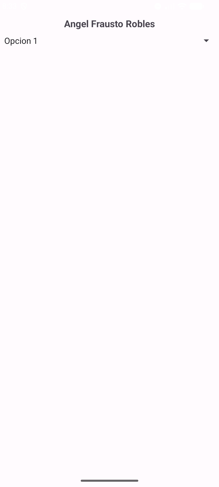
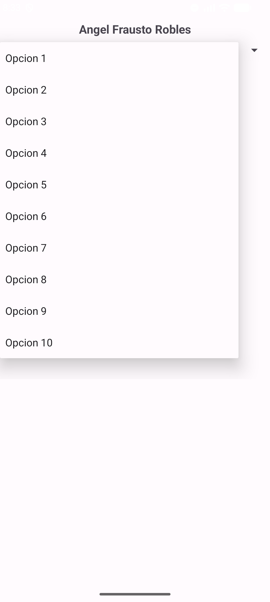
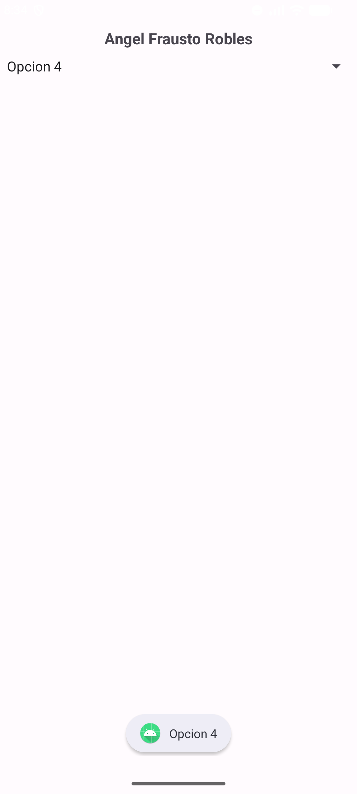
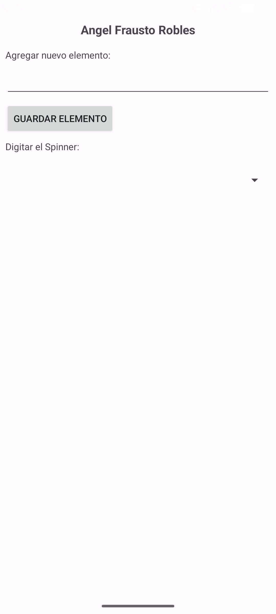
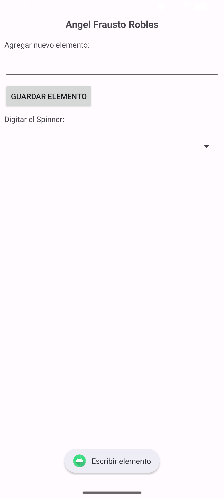
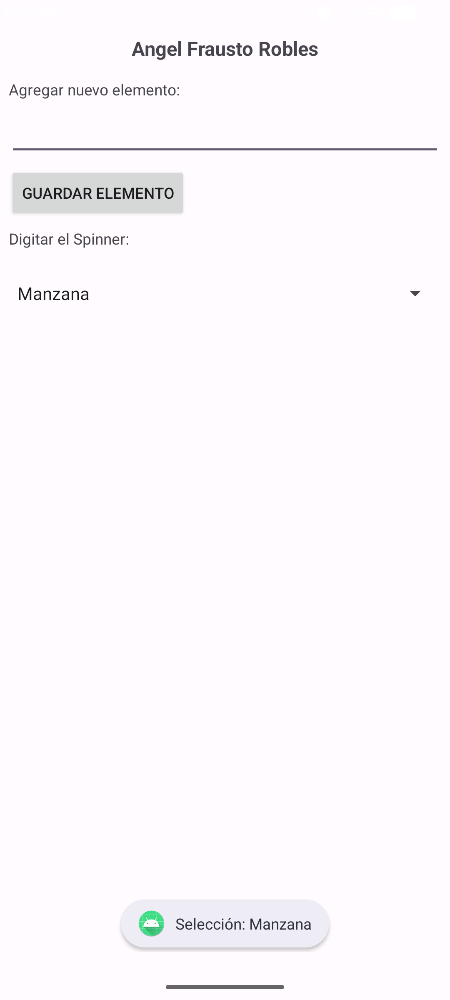
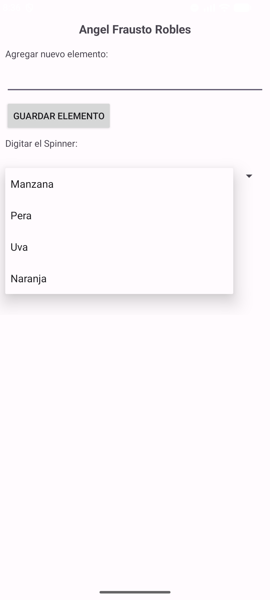
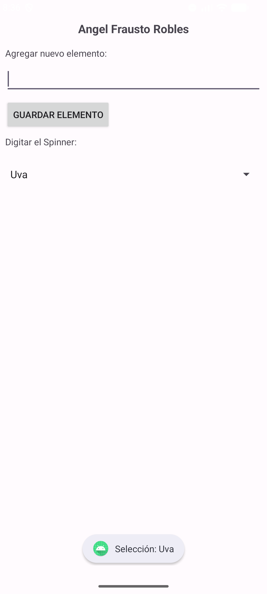

| Asignatura: | Desarrollo de Aplicaciones Móviles Nativas |
| Tarea: | Tarea 8 |
| Alumno: | Angel Frausto Robles |
| Grupo: | 7CM4 |
| Fecha: | 25 de septiembre de 2026 |
Un Spinner es una lista desplegable que muestra un elemento a la vez. Al
tocarlo aparece el menú con todas las opciones y el usuario elige una. Sus elementos llegan a través de
un SpinnerAdapter: un ArrayAdapter cuando las
opciones están en un arreglo, o un adaptador de cursor cuando salen de una consulta a una base de datos.
La selección se atiende con OnItemSelectedListener.
Objetivos:
Spinner desde un arreglo definido en strings.xml (Ejemplo 1).SQLiteOpenHelper y mostrarlos en el Spinner (Ejemplo 2).Toast la opción seleccionada.
Un solo proyecto Java con dos actividades que extienden android.app.Activity:
MainActivity para el Ejemplo 1 y SqliteActivity
para el Ejemplo 2, junto con la clase DatabaseHandler. Cada pantalla lleva mi
nombre como encabezado para identificar las capturas.
El Spinner toma sus diez opciones del arreglo xops
mediante android:entries. Al inicio se muestra solo la primera opción. Al tocarlo
se despliega la lista completa y, al elegir una opción, el Toast muestra su texto
y el Spinner se pliega con la opción elegida.



La clase DatabaseHandler crea la tabla nombres con
onCreate, guarda un elemento con insertLabel y lee
todos con getAllLabels. Al oprimir "Guardar elemento", la actividad inserta el texto
escrito, limpia el campo, oculta el teclado y vuelve a cargar el Spinner con los datos de
la base. Si el campo está vacío, un Toast pide escribir un elemento. Cada vez que se
recarga el Spinner, o se elige otra opción, onItemSelected
muestra un Toast con la selección.





[Conclusiones personales del alumno sobre la clase Spinner, los adaptadores y SQLite.]
developer.android.com/reference/android/widget/Spinnerdeveloper.android.com/reference/android/database/sqlite/SQLiteOpenHelper